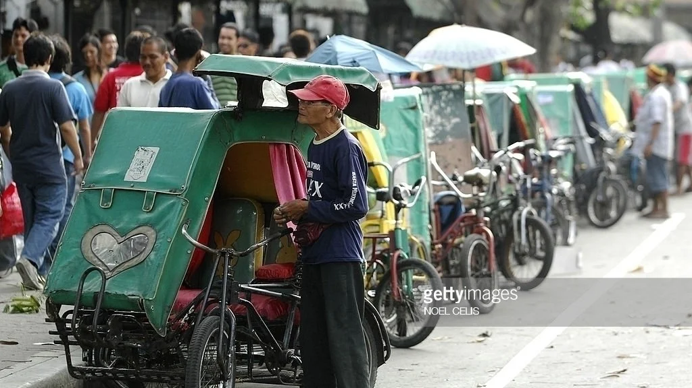
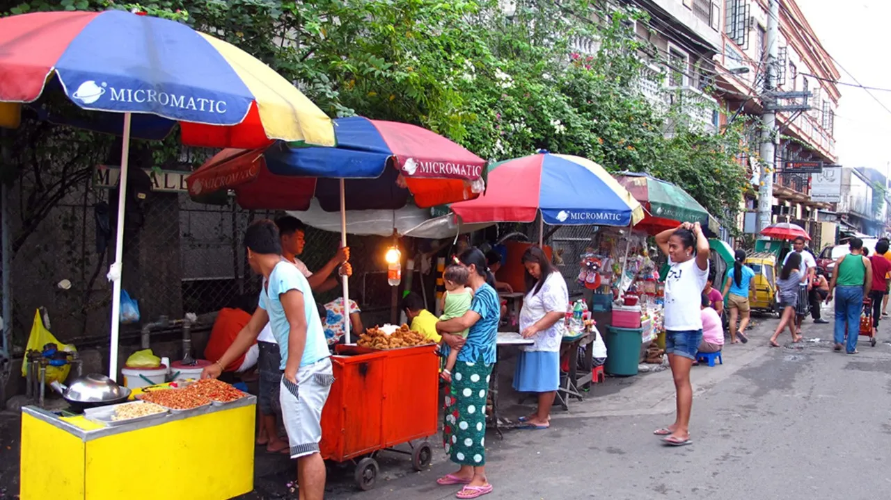

Sektor ng ekonomiya na walang pormal o salat sa mga dokumentong kailangan sa pagsasagawa ng gawaing pang-ekonomiya. Ang kita ng sektor na ito ay HINDI naisasama sa kabuuang Gross Domestic Product (GDP) ng bansa. Paraan ng mamamayan upang magkaroon ng kabuhayan/dagdag kita sa tuwing panahon ng pangangailangan. Ito ay nagdudulot rin ng pagkakalikha ng mga produkto at serbisyong tutugon sa ating mga pangangailangan. Kilala rin sa tawag na Underground Economy.
- Mga gawaing maaaring isakatuparan lamang sa loob ng tahanan
- Mga gawaing pansibiko, pagkakawanggawa, at panrelihiyon
- Mga sari-sari stores, pagtitinda sa labas ng bahay o sidewalk, paglalako ng kalakal o serbisyo
- Ilegal na gawain tulad ng pagnanakaw, pagbebenta ng ilegal na gamot, piracy, at prostitusyon
- Sinasalo nito ang mga mamamayan na hindi makapasok bilang mga regular na empleyado sa isang kompanya.
- Nagbibigay ng pagkakataon sa maraming Pilipino na makapaghanapbuhay
- Nagsisilbing tagasalo ng mga mamamayang may mahigpit na pangangailangan
- Malaki ang naitutulong sa mga konsyumer ang mga kalakal at serbisyong mula sa impormal na sektor dahil sa MURA nitong halaga
- Makaligtas sa pagbabayad ng buwis sa pamahalaan
- Makaiwas sa masyadong mahaba at masalimuot na proseso ng pakikipagtransaksyon sa pamahalaan (bureaucratic red tape)
- Kawalan ng regulasyon mula sa pamahalaan na kung saan ang mga batas at programa ay hindi naitutupad nang maayos
- Makapaghanapbuhay nang hindi nangangailangan ng malaking kapital o puhunan
- Malabanan ang matinding kahirapan
- Pagbaba ng halaga ng nalilikom na buwis
- Banta sa kapakanan ng mga mamimili
- Paglaganap ng mga ilegal na gawain